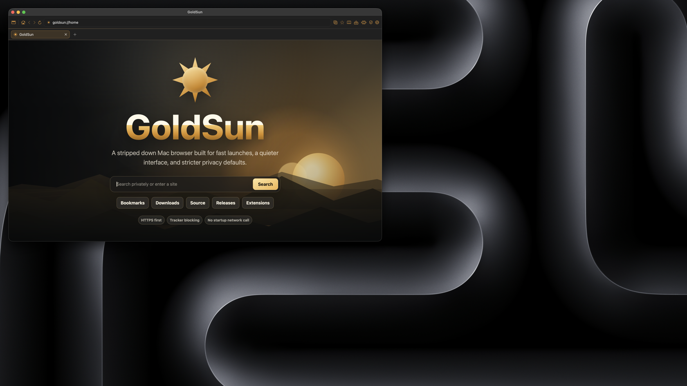

GoldSun
A native macOS Swift browser built around a calm Mac interface, a Chromium backend roadmap, Chrome Web Store compatibility, and built-in ad blocking.

Mac-native shell
SwiftUI and AppKit own the windows, toolbar, settings, menus, and tab structure.
Extension-ready
The Chromium plan targets Chrome Web Store installs, Manifest V3, service workers, content scripts, and native permission review.
Built-in blocking
GoldSun includes native ad-block settings for protection level, tracker blocking, filter lists, acceptable ads, and automatic updates.
Version 0.1.0
The first prerelease package installs GoldSun into Applications. It is unsigned until Developer ID signing and notarization are configured.
./script/package_release.sh 0.1.0